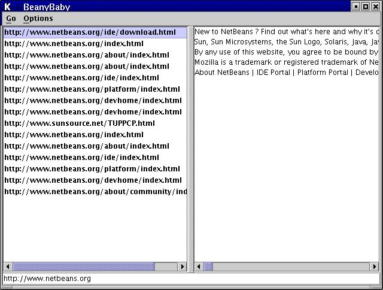
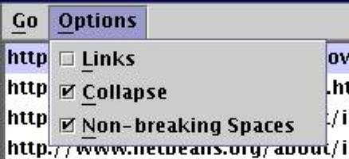
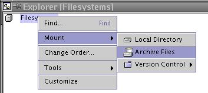
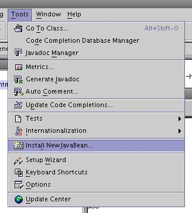
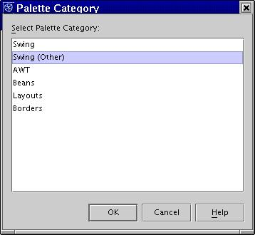
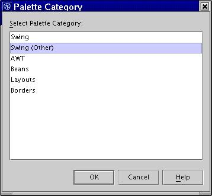
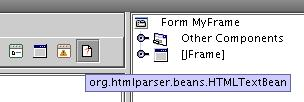
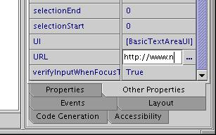

Quick Introduction
Run the example program that demonstrates the capabilities of the Java Beans that are already included in the htmparser.jar (it's assumed that the htmlparser.jar file from an integration build 1.3 later than April 12, 2003 is in your current directory):
java -classpath htmlparser.jar org.htmlparser.beans.BeanyBaby
What you should see is a split window showing a URL extraction with a list of links on the left and the text on the right.

The splitter on the left contains a GUI oriented HTMLLinkBean (which uses an underlying API LinkBean) and the splitter on the right contains a GUI oriented HTMLStringBean (which uses an underlying API StringBean).
Type in a URL or double-click a URL from the list. Use the Go menu to go back to a previous link or step to the next link you already visited.
The options menu provides access to the binary properties:

- Links - turn on and off the extraction of hyperlinks with the text
- Collapse - turn on and off collapsing whitespace
- Non-Breaking Spaces - turn on and off transforming non-break spaces into regular spaces
Simple Usage
The simplest operation (this shows StringBean use, but LinkBean use is similar) is just to create a new one, set the URL and then get the text:
#import org.htmlparser.beans.StringBean;
public class TryBeans
{
public static void main (String[] args)
{
StringBean sb = new StringBean ();
sb.setURL ("http://cbc.ca");
System.out.println (sb.getStrings ());
}
}
Save this in a file called TryBeans.java and then run the following commands:
javac -classpath htmlparser.jar TryBeans.java java -classpath htmlparser.jar:. TryBeans
or for Windows:
java -classpath htmlparser.jar;. TryBeans
Simple GUI Usage
The following instructions are for the NetBeans IDE but other environments will have a similar operation.
You can mount the htmlparser.jar file:

and use the bean classes directly or if you want to use them in the Form designer you'll need to install them. Use the Install New Javabean menu item in the Tools menu:

There are a number of beans in the jar, as indicated above the GUI beans are the HTMLStringBean and HTMLLinkBean. You can install them all, but it might clutter up your palette a bit, so I would recomend only install the ones you need for the project at hand. You'll also need to specify the palette that the beans will be added to:
 

Once the bean is installed it will show up on the tool palette and you can click it and drop it onto a JFrame or JPanel or whatever:

Once it's in your designer you can set the properties and have it display the text even while designing (assuming you're online):

Of course you can subclass the provided beans or write your own.